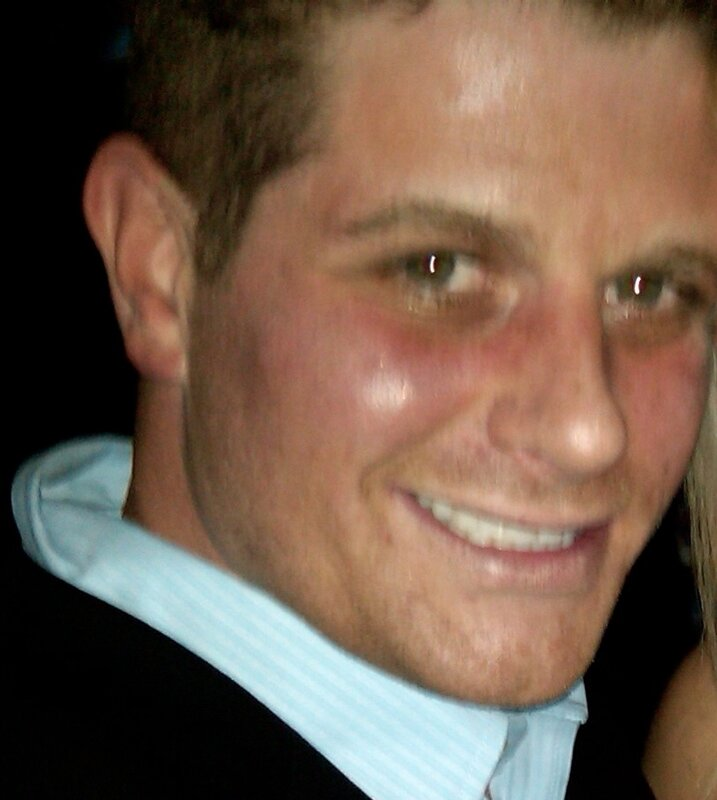

Our Founder
Leadership rooted in compassion and experience

Meet William Edwards - Founder of BCE Sober Living
BCE Sober Living was born from personal tragedy, profound transformation, and an unwavering commitment to helping others find the recovery that saved my life.
A Story of Loss and Redemption
Five years ago, my brother passed away from an accidental overdose. That, unfortunately, was the moment I finally decided to stop using. I woke up on a ventilator two weeks after he had already passed to learn he was gone. The experience traumatized me, and the guilt is something I will carry forever.
I've worked with treatment centers since 2010—both professionally and as someone who has sought help myself. That dual perspective—understanding addiction from the inside while also working within the recovery field—has shaped everything about BCE Sober Living.
Why BCE? Why Frederick?
My goal is clear: to open a sober living home in the City of Frederick for people struggling with addiction who are truly ready to stop. This will not be a flop house or a revolving-door environment. It will be a structured, supportive recovery home where I will be present and available to all residents.
Whether residents need someone to talk to, help with job searches, résumé preparation, insurance, doctor appointments, or applications for available benefits—I will be there. I also have two licensed therapists who have offered to lead workshops, run therapeutic exercises, and support residents who ask for it.
Frederick is one of the most incredible places I've lived, and that's entirely because of the people who make up this community. The response from this city has been overwhelmingly positive, and I couldn't imagine a better place to fulfill my purpose and help save the lives of those who want it.
A Foundation Built on Experience
I hold an undergraduate degree in quantitative finance from James Madison University and a master's degree in computer science from Columbia University. Professionally, I've worked as a quantitative analyst for organizations including Marriott, Starwood, Pepsi, a hedge fund, Dannon, and two REITs. I was previously FINRA-registered with Series 7, 63, and 65 licenses, passed the New Jersey Bar Exam, and held my real estate license in Virginia.
I share this not to boast, but to emphasize that I am not entering this venture blindly. I've done my due diligence, I'm well aware of what I'm doing, and I know how to structure this home for success. Under my S-corp, I've formed BCE III Sober Living LLC—named after my brother—for this project.
My Commitment to You
I've always made it a point to help others, sometimes to the detriment of my own well-being. I've learned from that mistake. My focus now is helping the people who genuinely want what I—and so many others in recovery—have found, because it really is great!
I vow to help and provide a safe, secure, and structured environment for the citizens of this town. I will do everything in my power to save the ones that want it. The people who want what I and many others have assiduously achieved: Peace, happiness, and love.
A Message of Hope
I've found my calling: to assist and guide individuals toward a life worth living, and to support the families who are also impacted by addiction. Let's focus on those who are ready and willing to be helped, and in doing so, strengthen our entire community.
"God's purposes will prevail, no matter what." - Genesis 12:10–13:1
Every resident who walks through our doors will be welcomed into a community built on hope, transformation, and the possibility of a brighter future. This is more than a business—it's my life's purpose.
Join Our Community
Experience the difference that professional, compassionate care can make in your recovery journey.
Learn More